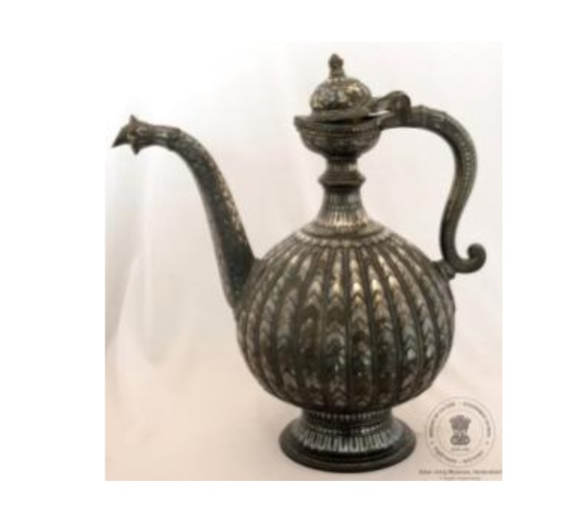

🔇 Is bhasha me is vastu ka audio abhi uplabdh nahi hai.
अभिग्रहण संख्या: XXXIII-80 सुराही

अभिग्रहण संख्या: XXXIII-80
यह सुराही ताँबे, चाँदी तथा जस्ता से बनी है। इसकी टोंटी मुड़ी हुई है और उस पर बेल-बूटों की सजावट की गई है। इसके बाहरी भाग पर उभरी हुई धारियाँ, तीन पत्तियों के आकार की आकृतियाँ तथा चाँदी की नक्काशी बनी हुई है। इसकी पहचान इसके हैंडल के ऊपरी सिरे के पास उभरे हुए फूल, खरबूजे के आकार के मुख्य भाग तथा पंखुड़ीदार किनारे से होती है। यह कर्नाटक के बीदर की बनी हुई है और इसका निर्माण 17वीं शताब्दी ईस्वी का माना जाता है।
पानी डालने के लिए प्रयुक्त इस सुंदर पात्र को उर्दू में आफ़ताबा कहा जाता है। इसमें पानी हैंडल के ऊपर बने छोटे से छिद्र से भरा जाता है। इस पर पत्तियों की आकृति पूरे पात्र पर दोहराई गई है तथा गर्दन और आधार के पास बेल-बूटों की सजावट की गई है। इसकी चाँदी की नक्काशी तहनिशान और तारकशी तकनीकों से की गई है।
Acc No: XXXIII-80 Ewer (Aftaba)
Acc No: XXXIII-80
A jug (Ewer) crafted from zinc alloy, copper, and silver components, featuring a curved spout decorated with scrollwork. The surface displays fluted ridges, three-leaf patterns, and silver engraving. Key identifying features include a raised flower motif near the handle end, a melon-shaped body, and petal-fluted rims. Originating from Bidar, Karnataka, India, it dates to the 17th century CE.
Traditionally called 'Aftaba' in Urdu, this vessel was used for pouring water, filled via a small aperture at the top of the handle. Silver 'Tahnishan' and 'Tarkashi' techniques display repeating leafy scroll patterns across the neck and base.
6. ఈవర్ / కూజా
Acc No: XXXIII-80
రాగి, వెండి భాగాలు మరియు జింక్ పదార్థంతో తయారు చేయబడిన ఈ పాత్ర (Ewer) వంపు తిరిగిన ముక్కు మరియు చుట్టలను కలిగి ఉంది. దీని ఉపరితలంపై ఉబ్బెత్తుగా ఉండే గాడులు, మూడు ఆకుల నమూనాలు, చెక్కిన ముక్కు మరియు వెండి డిజైన్ ఉన్నాయి. ఈ పాత్రకు ఒక ప్రత్యేక గుర్తింపు ఉంది, అదేమిటంటే వలయం చివరన ఉబ్బెత్తుగా చెక్కిన పువ్వు, పుచ్చకాయ ఆకారపు శరీరం మరియు రేకుల వలె గాడులు ఉన్న అంచు. ఇది భారతదేశంలోని కర్ణాటక రాష్ట్రంలోని బీదర్కు చెందినది మరియు దీని కాలం క్రీ.శ. 17వ శతాబ్దంగా నిర్ధారించబడింది.
నీళ్ళు పోయడానికి ఉపయోగించే అందమైన నీటి పాత్రను ఉర్దూలో అఫ్తాబా (Aftaba ) అని పిలిచేవారు. హ్యాండిల్ పైభాగంలో ఉన్న ఒక చిన్న రంధ్రం ద్వారా దీనిని నింపుతారు: వెండి తైహ్నిషాన్ (silver taihnishan ) మరియు తర్కాషీ (tarkashi ) పద్ధతులలో, మెడ మరియు అడుగుభాగం దగ్గర చుట్టలతో పాటు ఆకు డిజైన్ అంతటా పునరావృతమవుతుంది.
నీళ్ళు పోయడానికి ఉపయోగించే అందమైన నీటి పాత్రను ఉర్దూలో అఫ్తాబా (Aftaba ) అని పిలిచేవారు. హ్యాండిల్ పైభాగంలో ఉన్న ఒక చిన్న రంధ్రం ద్వారా దీనిని నింపుతారు: వెండి తైహ్నిషాన్ (silver taihnishan ) మరియు తర్కాషీ (tarkashi ) పద్ధతులలో, మెడ మరియు అడుగుభాగం దగ్గర చుట్టలతో పాటు ఆకు డిజైన్ అంతటా పునరావృతమవుతుంది.
۶. آفتابہ
اندراج نمبر: XXXIII-80
یہ خوب صورت پانی کا جگ تانبے اور چاندی کے اجزا سے تیار کیا گیا ہے، جبکہ اس میں زنک کا مواد بھی شامل ہے۔ اس کی خم دار نالی اور گھومتے ہوئے نقش اسے منفرد بناتے ہیں۔ اس کی سطح پر ابھرے ہوئے دھاری دار نقش اور پتوں کے تین خوب صورت ڈیزائن بنائے گئے ہیں، جبکہ نالی پر کندہ کاری اور چاندی کی جڑائی سے آرائش کی گئی ہے۔ اس جگ کی خاص پہچان دستے کے آخری حصے کے قریب ابھرا ہوا پھول کا نقش، خربوزے کی شکل کا جسم اور پنکھڑیوں جیسے دھاری دار کنارے ہیں۔ یہ فن بیدر، کرناٹک، ہندوستان سے تعلق رکھتا ہے اور اس کا تعلق سترہویں صدی عیسوی سے ہے۔
پانی ڈالنے کے لیے استعمال ہونے والے اس برتن کو اردو میں آفتابہ کہا جاتا ہے۔ اسے دستے کے اوپری حصے میں موجود ایک چھوٹے سوراخ کے ذریعے بھرا جاتا ہے۔ اس پر ہر طرف پتوں کے نقش دہرائے گئے ہیں، جبکہ گردن اور بنیاد کے قریب چاندی کی تہ نشاں اور ترکشی تکنیک کے ذریعے گھومتے ہوئے نقش بنائے گئے ہیں۔
پانی ڈالنے کے لیے استعمال ہونے والے اس برتن کو اردو میں آفتابہ کہا جاتا ہے۔ اسے دستے کے اوپری حصے میں موجود ایک چھوٹے سوراخ کے ذریعے بھرا جاتا ہے۔ اس پر ہر طرف پتوں کے نقش دہرائے گئے ہیں، جبکہ گردن اور بنیاد کے قریب چاندی کی تہ نشاں اور ترکشی تکنیک کے ذریعے گھومتے ہوئے نقش بنائے گئے ہیں۔
অ্যাক্সেস নং: XXXIII-80 জলপাত্র
अभिग्रहण संख्या: XXXIII-80
তামা ও রুপার উপাদান এবং দস্তা দিয়ে তৈরি এই জগটিতে রয়েছে বাঁকানো নল ও স্ক্রল-নকশা। এর উপরিভাগে উঁচু খাঁজ ও তিনটি পাতার নকশা রয়েছে; এছাড়াও এতে খোদাই করা নল এবং রুপার কারুকাজও বিদ্যমান। এর বিশেষ কিছু বৈশিষ্ট্য হলো—হাতলের শেষ প্রান্তের কাছে উঁচু হয়ে থাকা ফুলের নকশা, খরমুজের মতো আকৃতির মূল অংশ এবং পাপড়ির মতো খাঁজকাটা মুখ। এটি ভারতের কর্ণাটক রাজ্যের বিদার অঞ্চলের নিদর্শন এবং সপ্তদশ শতাব্দীর বলে ধারণা করা হয়।
জল ঢালার কাজে ব্যবহৃত এই সুদৃশ্য পাত্রটিকে উর্দুতে ‘আফতাবা’ বলা হতো। পাত্রটির হাতলের ওপরের দিকের একটি ছোট ছিদ্র দিয়ে এতে জল ভরা হতো; রুপার ‘তাহনিশান’ ও ‘তারকাশি’ পদ্ধতিতে এর পুরো গায়ে পাতার নকশা এবং পাত্রের গলা ও নিচের অংশের কাছে প্যাঁচানো নকশা ফুটিয়ে তোলা হয়েছে।
Acc No: XXXIII-80 સુરાહી (જળ પાત્ર)
अभिग्रहण संख्या: XXXIII-80
તાંબા અને ચાંદીના ઘટકો તથા ઝિંક (જસત) સામગ્રીમાંથી બનાવેલી સુરાહી, જે વક્ર (વાંકી) નાસ અને સ્ક્રોલ (વેલાકાર વળાંક) ધરાવે છે. તેની સપાટી પર ઊપસેલી ખાંચો (ફ્લુટિંગ) અને ત્રણ પાંદડાની ભાત છે, જેમાં કોતરવામાં આવેલી નાસ અને ચાંદીની ડિઝાઇન છે. આ ઝારીની એક વિશેષ ઓળખ છે, જેમ કે હૂપ (હાથથા) ના છેડાની નજીક ઉપસેલા આકારમાં ફૂલ, તરબૂચ આકારનું શરીર અને પાંદડી આકારની ખાંચવાળી કિનારી. તે બિદર, કર્ણાટક, ભારતની છે અને ઈ.સ. ૧૭મી સદીની છે.
પાણી રેડવા માટે વપરાતી આ ભવ્ય પાણીની ઝારીને ઉર્દૂમાં 'આફતાબા' કહેવામાં આવતી હતી. તે હેન્ડલની ટોચ પરના નાના ખુલ્લા ભાગ દ્વારા ભરવામાં આવે છે; ગળા અને આધારની આસપાસ સ્ક્રોલ સાથે પાંદડાની ડિઝાઇન ચાંદીની 'તૈહનિશાન' અને 'તારકશી' પદ્ધતિઓ દ્વારા સમગ્ર ભાગમાં પુનરાવર્તિત કરવામાં આવી છે.
Acc No: XXXIII-80 ಈವರ್
अभिग्रहण संख्या: XXXIII-80
ಬಾಗಿದ ಚೊಂಬಿನ തുദി (ಕೋಡು) ಹಾಗೂ ಸುರುಳಿಗಳನ್ನು ಹೊಂದಿರುವ, ತಾಮ್ರ ಮತ್ತು ಬೆಳ್ಳಿಯ ಅಂಶಗಳು ಹಾಗೂ ಸತುವಿನ ವಸ್ತುವಿನಿಂದ ಮಾಡಲ್ಪಟ್ಟ ಜಾರಿಯುಳ್ಳ ಕೂಜ ಇದಾಗಿದೆ. ಕೆತ್ತನೆ ಮಾಡಿದ ಚೊಂಬಿನ ತುದಿಯೊಂದಿಗೆ ಇದು ಉಬ್ಬು ಗೆರೆಗಳನ್ನು ಮತ್ತು ಮೈಮೇಲೆ ಬೆಳ್ಳಿಯ ವಿನ್ಯಾಸದೊಂದಿಗೆ ಮೂರು ಎಲೆಗಳ ನಮೂನೆಗಳನ್ನು ಹೊಂದಿದೆ. ಈ ಕೂಜವು ಒಂದು ವಿಶೇಷ ಗುರುತನ್ನು ಹೊಂದಿದೆ, ಅದೇನೆಂದರೆ ಇದರ ಬಳೆಯ ತುದಿಯ ಬಳಿ ಉಬ್ಬು ಹೂವು, ಕಲ್ಲಂಗಡಿ ಆಕಾರದ ಕಾಯ ಮತ್ತು ಎಸಳುಗಳ ಉಬ್ಬು ಗೆರೆಗಳ ಅಂಚು ಇರುವುದು ವಿಶೇಷವಾಗಿದೆ. ಇದು ಭಾರತದ ಕರ್ನಾಟಕದ ಬೀದರ್ಗೆ ಸೇರಿದ್ದಾಗಿದ್ದು, ಇದನ್ನು ಕ್ರಿ.ಶ. 17ನೇ ಶತಮಾನದ್ದೆಂದು ಅಂದಾಜಿಸಲಾಗಿದೆ.
ನೀರು ಸುರಿಯಲು ಬಳಸುತ್ತಿದ್ದ ಈ ಸುಂದರವಾದ ನೀರಿನ ಜಗನ್ನು ಉರ್ದುವಿನಲ್ಲಿ 'ಅಫ್ತಾಬಾ' ಎಂದು ಕರೆಯಲಾಗುತ್ತಿತ್ತು. ಇದನ್ನು ಹಿಡಿಕೆಯ ಮೇಲ್ಭಾಗದಲ್ಲಿರುವ ಸಣ್ಣ ದ್ವಾರದ ಮೂಲಕ ತುಂಬಿಸಲಾಗುತ್ತದೆ: ಬೆಳ್ಳಿಯ ತಹನಿಶಾನ್ ಮತ್ತು ತರಕಶಿ ತಂತ್ರಜ್ಞಾನಗಳಲ್ಲಿ ಕುತ್ತಿಗೆ ಮತ್ತು ತಳಭಾಗದ ಬಳಿ ಸುರುಳಿಗಳೊಂದಿಗೆ ಎಲೆಯ ವಿನ್ಯಾಸವನ್ನು ಸಂಪೂರ್ಣವಾಗಿ ಪುನರಾವರ್ತಿಸಲಾಗಿದೆ.
୬. ଏୟର୍ (ଆଫ୍ତାବା)
Acc No: XXXIII-80
ଏହା ତମ୍ବା ଏବଂ ରୂପା ତଥା ଜିଙ୍କ୍-ର ମିଶ୍ରଣରେ ତିଆରି ଏକ ସୁନ୍ଦର ଏୟର୍, ଯାହାର ଏକ ବଙ୍କା ସ୍ପାଉଟ୍ ବା ନଳୀ ଏବଂ ସ୍କ୍ରୋଲ୍ ବା ଲତା ପରି ଡିଜାଇନ୍ ରହିଛି। ଏହାର ପୃଷ୍ଠଭୂମିରେ ଉଠାଣିଆ ଫ୍ଲୁଟିଙ୍ଗ୍ ଏବଂ ତିନୋଟି ପତ୍ରର ଡିଜାଇନ୍ ରହିଛି, ଯାହା ସହିତ ଏକ ଖୋଦିତ ସ୍ପାଉଟ୍ ଏବଂ ରୂପାର ଡିଜାଇନ୍ ରହିଛି। ଏହି ଏୟର୍ର ଏକ ସ୍ୱତନ୍ତ୍ର ପରିଚୟ ରହିଛି; ଯେମିତିକି ହୁପ୍ ବା ବଳୟ ପାଖରେ ଉଭା ହୋଇଥିବା ଫୁଲ, ତରଭୁଜ ଆକାରର ଶରୀର ଏବଂ ପାଖୁଡ଼ା ପରି ଫ୍ଲୁଟ୍ ହୋଇଥିବା ଧାର। ଏହା ଭାରତର କର୍ଣ୍ଣାଟକ ସ୍ଥିତ 'ବିଦର' ସହରର ଏବଂ ଏହ ଆନୁମାନିକ ଖ୍ରୀଷ୍ଟାବ୍ଦ ୧୭ଶ ଶତାବ୍ଦୀର।
ପାଣି ଢାଳିବା ପାଇଁ ବ୍ୟବହୃତ ହେଉଥିବା ଏହି ଚମତ୍କାର ଜଳ ପାତ୍ରଟିକୁ ଉର୍ଦ୍ଧୁ ଭାଷାରେ 'ଆଫ୍ତାବା' କୁହାଯାଏ। ମୁଠାର ଉପର ଭାଗରେ ଥିବା ଏକ ଛୋଟ ମୁହଁ ଦ୍ୱାରା ଏଥିରେ ପାଣି ଭରାଯାଏ; ଏହାର ସବୁଆଡ଼େ ପତ୍ର ଡିଜାଇନ୍ ର ପୁନରାବୃତ୍ତି ହୋଇଛି ଏବଂ ବେକ ତଥା ଆଧାର ପାଖରେ ରୂପାର 'ତୈହନିଶାନ୍' ଏବଂ 'ତାରକସୀ' କୌଶଳରେ ସ୍କ୍ରୋଲ୍ ଡିଜାଇନ୍ କରାଯାଇଛି।
ପାଣି ଢାଳିବା ପାଇଁ ବ୍ୟବହୃତ ହେଉଥିବା ଏହି ଚମତ୍କାର ଜଳ ପାତ୍ରଟିକୁ ଉର୍ଦ୍ଧୁ ଭାଷାରେ 'ଆଫ୍ତାବା' କୁହାଯାଏ। ମୁଠାର ଉପର ଭାଗରେ ଥିବା ଏକ ଛୋଟ ମୁହଁ ଦ୍ୱାରା ଏଥିରେ ପାଣି ଭରାଯାଏ; ଏହାର ସବୁଆଡ଼େ ପତ୍ର ଡିଜାଇନ୍ ର ପୁନରାବୃତ୍ତି ହୋଇଛି ଏବଂ ବେକ ତଥା ଆଧାର ପାଖରେ ରୂପାର 'ତୈହନିଶାନ୍' ଏବଂ 'ତାରକସୀ' କୌଶଳରେ ସ୍କ୍ରୋଲ୍ ଡିଜାଇନ୍ କରାଯାଇଛି।
६. झारी (आफताबा)
कार्यवाही क्र: XXXIII-80
तांबे, चांदीचे घटक आणि जस्त या सामग्रीपासून बनवलेली झारी, जिची तोटी वक्र असून त्यावर वेलींची नक्षी आहे. याच्या पृष्ठभागावर उठावदार नक्षी आणि तीन पानांच्या रचना असून, याची तोटी कोरलेली आणि त्यावर चांदीची नक्षी आहे. या झारीची एक विशेष ओळख आहे, ती म्हणजे कडीच्या टोकाजवळ उठावदार फूल, खरबुजाच्या आकाराचा मुख्य भाग आणि पाकळ्यांसारखी उठावदार कडा. हे बिदर, कर्नाटक, भारत येथील असून इ.स. १७ व्या शतकातील आहे.
पाणी ओतण्यासाठी वापरल्या जाणाऱ्या या आकर्षक पाण्याच्या पात्राला उर्दूमध्ये 'आफताबा' म्हटले जात असे. हे मुठीच्या वरच्या बाजूला असलेल्या एका छोट्या छिद्रातून भरले जाते: संपूर्ण पृष्ठभागावर पानांची नक्षी पुनरावृत्त केली असून, मान आणि तळाजवळ चांदीच्या तहनिशान आणि तरकशी तंत्राने वेलींची नक्षी तयार केली आहे.
पाणी ओतण्यासाठी वापरल्या जाणाऱ्या या आकर्षक पाण्याच्या पात्राला उर्दूमध्ये 'आफताबा' म्हटले जात असे. हे मुठीच्या वरच्या बाजूला असलेल्या एका छोट्या छिद्रातून भरले जाते: संपूर्ण पृष्ठभागावर पानांची नक्षी पुनरावृत्त केली असून, मान आणि तळाजवळ चांदीच्या तहनिशान आणि तरकशी तंत्राने वेलींची नक्षी तयार केली आहे.
Acc No: XXXIII-80 കൂജ
Acc No: XXXIII-80
ചെമ്പ്, വെള്ളി ഘടകങ്ങളും സിങ്കും ഉപയോഗിച്ച് നിർമ്മിച്ചതും, വളഞ്ഞ ചുണ്ടും ചുരുളുകളുടെ ഡിസൈനുമുള്ള കൂജ. ഇതിന്റെ ഉപരിതലത്തിൽ പൊങ്ങിനിൽക്കുന്ന അരികുകളും മൂന്ന് ഇലകളുടെ പാറ്റേണുകളുമുണ്ട്; കൂടാതെ കൊത്തുപണികളുള്ള ഇതിന്റെ ചുണ്ടിൽ വെള്ളി കൊണ്ടുള്ള ഡിസൈനുകളുമുണ്ട്. ഈ കൂജയ്ക്ക് ഒരു പ്രത്യേക തിരിച്ചറിയൽ അടയാളമുണ്ട്; അതായത് ഇതിന്റെ വളയത്തിന്റെ അറ്റത്തിനടുത്ത് പൊങ്ങിനിൽക്കുന്ന രീതിയിലുള്ള ഒരു പൂവിന്റെ ഡിസൈനും, തണ്ണിമത്തന്റെ ആകൃതിയിലുള്ള പ്രധാന ഭാഗവും, പൂവിതളുകളുടെ ആകൃതിയിൽ വരമ്പുകളുള്ള വശങ്ങളുമുണ്ട്. ഇന്ത്യയിലെ കർണാടകയിലുള്ള ബിദാറിൽ നിന്നുള്ള ഈ വസ്തു എ.ഡി 17-ാം നൂറ്റാണ്ടിലേതാണെന്ന് കരുതപ്പെടുന്നു.
വെള്ളം പകരാൻ ഉപയോഗിച്ചിരുന്ന ഈ മനോഹരമായ കൂജയെ ഉർദുവിൽ 'അഫ്താബ' എന്നാണ് വിളിച്ചിരുന്നത്. ഇതിന്റെ പിടിയുടെ മുകളിലുള്ള ഒരു ചെറിയ സുഷിരത്തിലൂടെയാണ് വെള്ളം നിറയ്ക്കുന്നത്; വെള്ളികൊണ്ടുള്ള 'തഹ്നിഷാൻ', 'തർകാശി' എന്നീ സാങ്കേതികവിദ്യകളിൽ കഴുത്തിന്റെ ഭാഗത്തും അടിഭാഗത്തും ചുരുളുകളോട് കൂടിയ ഇലകളുടെ ഡിസൈൻ ഉടനീളം ആവർത്തിച്ചു നൽകിയിരിക്കുന്നു.
6. கூஜா (Aftaba)
Acc No: XXXIII-80
இந்த நீர்க்குவளை செம்பு, வெள்ளி மற்றும் துத்தநாகக் கூறுகளால் ஆனது. இதன் மூக்குப் பகுதி வளைந்தும், சுருள் வடிவத்திலும் செய்யப்பட்டுள்ளது. இதன் மேற்பரப்பில் உயர்த்தப்பட்ட கோடுகளும், மூன்று இலை வடிவங்களும் உள்ளன. மூக்குப்பகுதியில் செதுக்கு வேலைப்பாடுகளும், வெள்ளியால் அலங்காரமும் செய்யப்ப்பட்டுள்ளன. கைப்பிடியின் முடிவில், அருகில் உள்ள, புடைப்பு சிற்பமாக மலர் வடிவம், தர்பூசணி வடிவ அமைப்பு மற்றும் இதழ் போன்ற கோடுகள் அமைந்த விளிம்பு, ஆகியவை, நீர்க்குவளையின் சிறப்பு அடையாளங்களாகும். இது இந்தியாவின் கர்நாடக மாநிலத்தில், உள்ள பீதரைச் சேர்ந்தது. மேலும் இது பதினேழாம் நூற்றாண்டைச் சேர்ந்ததாகக் கணிக்கப்படுகிறது.
நீர் ஊற்றப் பயன்படும், இந்த நேர்த்தியான நீர்க் குவளை, உருது மொழியில் 'ஆஃப்தாபா' என்று அழைக்கப்பட்டது. இது கைப்பிடியின் மேல் உள்ள, ஒரு சிறிய துளை வழியே, நீர் நிரப்பப்படுகிறது: தைனிஷான் மற்றும் தர்காஷி, வெள்ளி நுட்ப வேலைப்பாடுகள், மூலம் கழுத்து மற்றும் அடிப்பகுதிக்கு அருகில், சுருள்களுடன் கூடிய இலை வடிவமைப்புகள், மீண்டும் மீண்டும் செய்யப்பட்டுள்ளன.
நீர் ஊற்றப் பயன்படும், இந்த நேர்த்தியான நீர்க் குவளை, உருது மொழியில் 'ஆஃப்தாபா' என்று அழைக்கப்பட்டது. இது கைப்பிடியின் மேல் உள்ள, ஒரு சிறிய துளை வழியே, நீர் நிரப்பப்படுகிறது: தைனிஷான் மற்றும் தர்காஷி, வெள்ளி நுட்ப வேலைப்பாடுகள், மூலம் கழுத்து மற்றும் அடிப்பகுதிக்கு அருகில், சுருள்களுடன் கூடிய இலை வடிவமைப்புகள், மீண்டும் மீண்டும் செய்யப்பட்டுள்ளன.